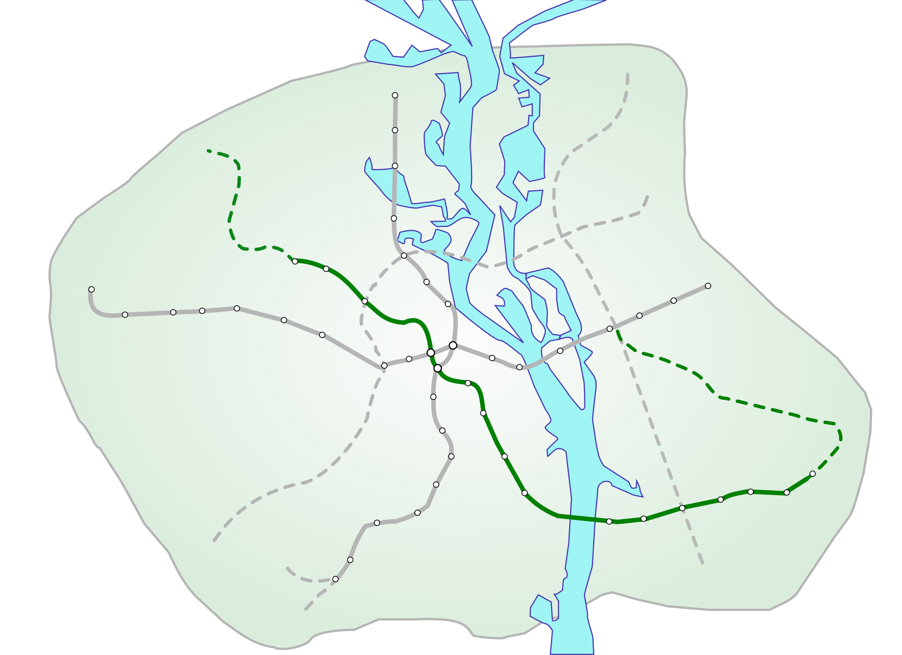

Сирецько-Печерська лінія

Сирецько-Печерська лінія |
|
|  | |
Сирецько-Печерська лінія — історично третя лінія Київського метрополітену. Кількість станцій — 16, довжина лінії — 23,9 км.
Нумерація колій: Сирець — Червоний хутір-I, Червоний хутір — Сирець-II.
|
QR-код лінії: |